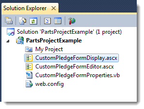
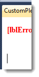
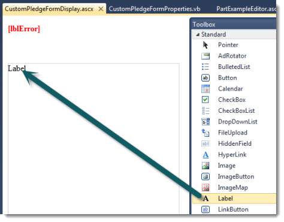
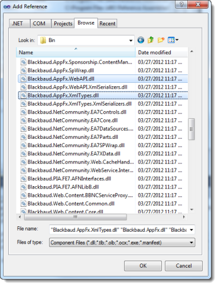

This example includes step-by-step instructions to create a custom part that meets these design requirements and learning objectives:
Design requirements: Create a custom pledge form for Blackbaud Internet Solutions
- Any required field for a pledge transaction that is not on this form will be defaulted or calculated in some way.
- Name information for the user will appear at the top of the form.
-
If the user is logged in
- form will be populated with that login’s user information
- fields will be read-only
-
If the user is not logged in
- form will not be populated
- fields will be writeable
- Email address will be populated with constituent or login information when possible. But it will be writeable and include simple email address format validation. For linked users, when the email address is changed, a new email addressed will be added to the constituent record in Blackbaud CRM.
- Amount will handle US currency values.
- When the user hits the Pledge button, something will be sent to Infinity via a web API. This will be either custom content created with the Infinity SDK or a new pledge transaction. This demonstrates using an the web API for an Add Data Form to write to an Infinity record, one out-of-the box and one created with the SDK.
- The behavior of the Pledge button will be configurable by a Blackbaud Internet Solutions administrator. Here are the two options:
- Write to a custom content table created with Infinity SDK
- For non-linked logins, write to a custom content table and for linked logins create pledge transaction in Infinity for that constituent
Objectives
- Configure Infinity application (selected items)
- Create parts projects
- Add custom parts to parts projects
- Create a custom form (UI design)
- Create a custom form (form behavior)
- Add Infinity record customizations for Blackbaud Internet Solutions parts
- Add a configuration setting to a custom form (UI design)
- Prepare to use Infinity API assemblies in a Blackbaud Internet Solutions custom part
- Create a custom form (write logic implementation)
Add a Designation to Infinity
Note This is a dependency for the custom pledge form example. Designations are probably already configured for Fundraising in your Infinity solution. However, if you are developing in an installation that has not been configured, these are the minimum steps to establish a designation. For information about fundraising hierarchies and designations, see Fundraising Guide.
- Ensure there is at least one fundraising purpose type. This a dependency for fundraising hierarchies. You can add a fundraising purpose type from Fundraising > Configuration > Fundraising purpose types.
Note If this option does not appear under Configuration, go to Administration > Application > Features and search for fundraising purpose types functionality. There are Add and Edit Data Forms and a delete record operation. Fundraising purpose types are stored as a simple data list.
- Ensure there is at least on fundraising hierarchy. This is a dependency for designations. You can add a fundraising hierarchy from Fundraising > Configuration > Fundraising hierarchies.
- Ensure there is at least one designation. This is a dependency for the sample donation form. You can add a designation from Fundraising > Configuration > Fundraising hierarchies.
Ensure Post Dates are Configured
Note This is a dependency to create a Revenue transaction. For more information about general ledger setup, see the General Ledger Setup chapter of the Administration Guide.
- From the Infinity application such as Blackbaud CRM, navigate to Administration.
-
Click General Ledger setup.

-
Click the account system.

-
Fully configure the account system. Or, if General Ledger functionality is not needed, under Configuration, select the task to Disable General Ledger.

Create a Custom Pledge Form (Design)
- Open your Parts project in Visual Studio. This example uses a project called PartsProjectExample.
- Add a new custom part (type) to the project called CustomPledgeForm.
-
A VB file may appear in an editor. For example, CustomPledgeFormProperties.vb may appear. You will use this file later. But for now, close the VB files for properties and take a look at Solution Explorer

-
Open CustomPledgeFormDisplay.ascx for editing in Designer. Right-click CustomPledgeFormDisplay.vb and select View Designer.

Right-clicking...

The ASCX form appears in Design Mode.

-
Click View > Toolbox. The Toolbox appears.

-
Add a break after [lblError]. You can place the cursor after the text and press ENTER.

-
Add a Panel to the form. Adjust the height and width so that there is space to work in.

-
Change the panel ID to PanelPledgeForm. To adjust the panel properties, you can right-click the panel and select Properties.

The Properties window appears. ID is probably at the bottom.

Changing Panel1 to PanelPledgeForm...

-
Add a label inside the Panel.

- Change the label ID to LabelPledgeForm. Change the text of the label to Make a pledge.
- Add a line break. Place the cursor next to the label and press ENTER.
-
Add an HTML Table.

-
Delete the right-most column so that there are three rows and two columns.

- Adjust the widths of the columns as necessary.
-
Add a Label to each of the cells in the left column. Change the text to First, Middle, and Last respectively. Change the IDs to LabelFirst, LabelMiddle, and LabelLast.

-
Add a TextBox to each of the cells in the right column. Change the IDs to TextBoxFirst, TextBoxMiddle, TextBoxLast respectively.

- Add a break after the table.
- Add a Label for Email address and a break after that. Change the ID for the Label to LabelEmail.
- Add a break.
- Add a TextBox for email address. Change the ID for the TextBox to TextBoxEmail.
- Add a break.
- Add a Label for Amount. Change the ID for the Label to LabelAmount.
- Add a break.
- Add a TextBox for amount. Change the ID for the TextBox to TextBoxAmount.
- Add a break.
-
Add a Button with the text Pledge. Change the ID for the Button to ButtonPledge.

Create a Custom Pledge Form Editor (Design)
- Open your Parts project in Visual Studio.
-
Open CustomPledgeFormEditor.ascx for editing in Designer.

- Delete the label that contains this text: "This part does not have any design time options"
- Add a break.
- Create the interface for the form's configuration option. The option is to which record to write pledge information:
- Write to a custom content table created with the Infinity SDK
- For non-linked logins and anonymous users, write to a custom content table and for linked logins create a pledge transaction in Infinity for that constituent.
-
Add a CheckBox with this Text and ID:
- Only write to custom pledge record
- CheckBoxOnlyWriteToCustomPledgeRecord
-
Add some paragraphs with this explanation:
- When this is selected, any time the Pledge button is clicked, the details will be written to the custom pledge record USR_CUSTOMPLEDGE using the custom pledge Add Data Form accessed through a BBMetalWeb generated DLL.
-
When this is not selected, for logged in users with linked accounts, the details will be written to a new pledge transaction using a DLL to access a web API. For anonymous users, the information will be written to USR_CUSTOMPLEDGE using the custom pledge Add Data Form accessed through a BBMetalWeb-generated DLL.

- Save the form.
Populate the Name Fields
- From Visual Studio, open the code-behind VB file for CustomPledgeFormDisplay.ascx (CustomPledgeFormDisplay.ascx.vb).
- Create a InitializeForm Sub for the custom pledge form.
-
Call the InitializeForm Sub from the Page_Load Sub.
{% include copy-code.html %}
{% highlight vbnet %}
Protected Sub Page_Load(ByVal sender As Object, ByVal e As System.EventArgs) Handles Me.Load
InitializeForm()
End Sub
{% endhighlight %}
- In the InitializeForm sub, check to see whether the current user is anonymous. Use the CurrentUser property in the BBNCExtensions.API.Users namespace to get the current user. Users have the IsAnonymous property.
-
Create a conditional that uses the value of the check as a condition. If the user is not anonymous, assign FirstName for CurrentUser to the text of TextBoxFirst and LastName to TextBoxLast. Then disable each name field by setting the Enabled property for the field to False. If the user is anonymous, leave the fields alone.
{% include copy-code.html %}
{% highlight vbnet %}
Private Sub InitializeForm()
'If there is a login, get the first and last name for the logged in user.
'Populate the First and Last fields on the form. Disable the First, Middle,
'and Last fields. Otherwise, leave the fields enabled and writeable.
If Not API.Users.CurrentUser.IsAnonymous Then
TextBoxFirst.Text = API.Users.CurrentUser.FirstName
TextBoxLast.Text = API.Users.CurrentUser.LastName
TextBoxFirst.Enabled = False
TextBoxMiddle.Enabled = False
TextBoxLast.Enabled = False
End If
End Sub
{% endhighlight %}
-
After you build the project and copy the files to your BBIS installation, the part should behave as follows: When accessed without logging in...

While logged in, as Supervisor in this case...

Track the Record Option
- Open the form properties VB file that was created when you added the custom part (type). For example, open CustomPledgeFormProperties.vb.
- Declare a Boolean variable that tracks whether to write only to the custom pledge record:
{% include copy-code.html %}
{% highlight vbnet %}
Public OnlyWriteToCustomPledgeRecord As Boolean
{% endhighlight %}
-
Save the file. The display and editor forms will check this variable to determine which record to use.
{% include copy-code.html %}
{% highlight vbnet %}
Public Class CustomPledgeFormProperties
Public OnlyWriteToCustomPledgeRecord As Boolean
End Class
{% endhighlight %}
Add Infinity Web API References
- Open the Parts project.
- From Solution Explorer, right-click the project and select Properties. The project's properties appear.
- Click References.
-
Click Add. The Add Reference screen appears.

- Click the Browse tab. Browse to the Bin folder in your BBIS installation. For example: C:\Program Files\Blackbaud\NetCommunity\Bin
-
Select these DLLs:
- Blackbaud.AppFx
- Blackbaud.AppFx.WebAPI
- Blackbaud.Appfx.XmlTypes

- Click OK.
- Save the project. Then build the project.